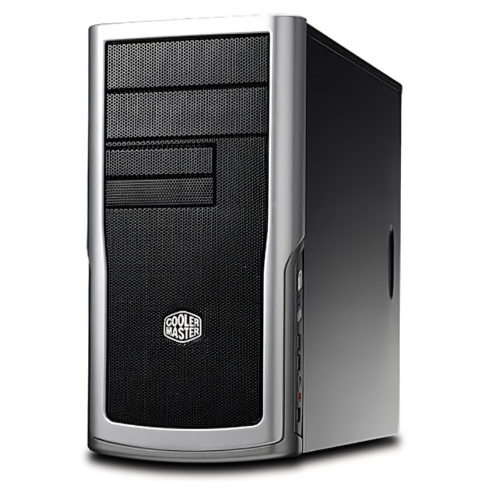

A system unit is the part of a computer that houses the primary devices that perform operations and produce results for complex calculations. It includes the motherboard, CPU, RAM and other components, as well as the case in which these devices are housed 1. The term system unit is generally used to differentiate between the computer itself and its peripheral devices, such as the keyboard, mouse and monitor 1. A system unit is also known as a chassis or a tower in layman’s term.